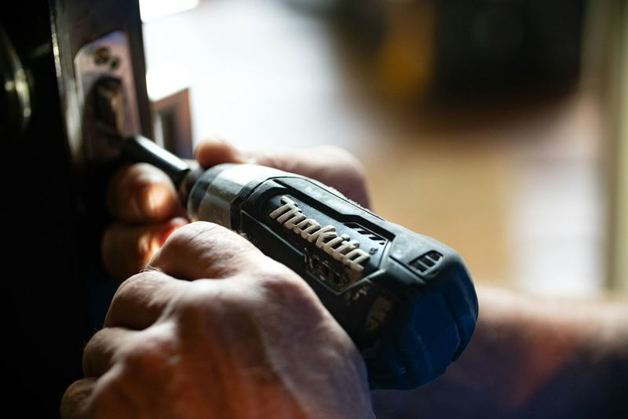
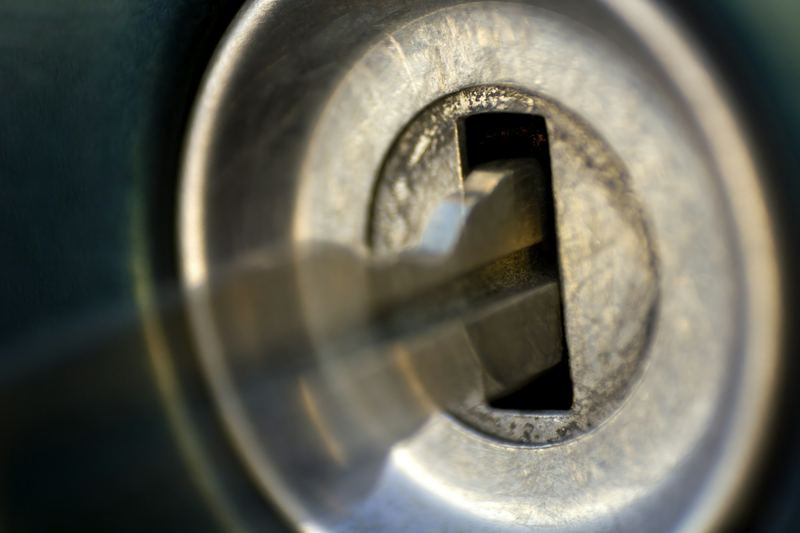
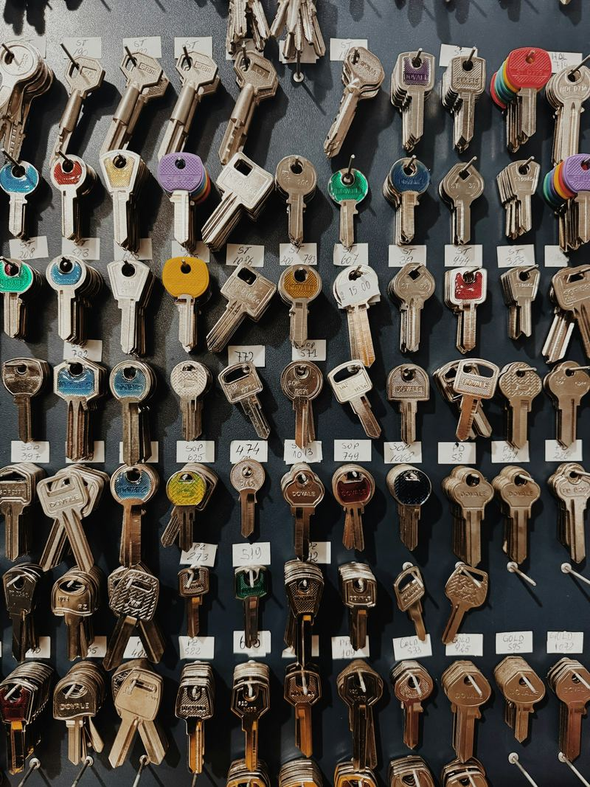
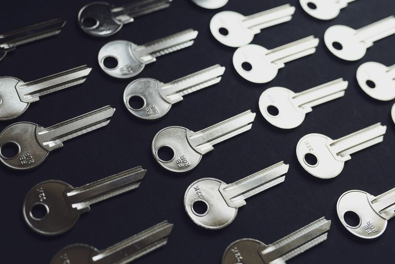

Nouzové otevírání dveří
Zabouchnuté i zamčené dveře bytu, domu nebo garáže.
Jaroslav Válek, zámečník z Opavy-Kylešovic. Nouzové otevírání dveří, klíčová služba a záruční servis zavíračů BRANO. Každý den od 8 do 18.
Každý den 8–18

Klepněte na svou situaci. Řeknu Vám, co teď dělat, a jedním tlačítkem mi zavoláte.
Co teď
Nevolejte dalšího řemeslníka a nezkoušejte dveře páčit, poškodíte zámek. Zavolejte, přijedu a dveře otevřu.
Opava a okolí.

Zabouchnuté i zamčené dveře bytu, domu nebo garáže.

Výroba klíčů a výměna vložek zámků.

Záruční servis, seřízení a opravy hydraulických zavíračů.
„Panu Válkovi jsem zavolal, byl u nás do 15 minut, v sobotu, ve svátek. S jeho prací jsme spokojení, v budoucnu bych se na něj obrátil znovu.“
zákazník na Firmy.cz